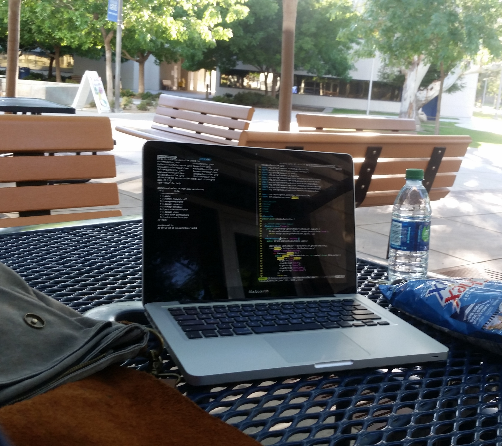

Hi! I'm Beth,
I’m a web and mobile app developer from California
I enjoy building or fixing systems that will save some time, or make a process more simple or more accurate. I like to build systems where everything is set up so that a program can take over and work out the calculations.
What makes a good program is good planning. I've learned the hard way how much good planning makes for beter development later. I'm constantly looking to improve myself, and I can't get enough tips on good software design.
I prefer using efficiency tools for writing code. They allow me to get thoughts down as quickly as possible so I can keep up with my thought process. I'm a huge fan of vim for coding.
